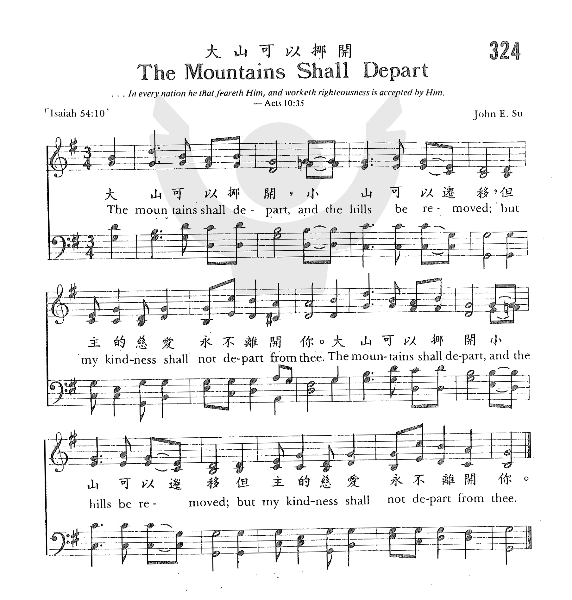
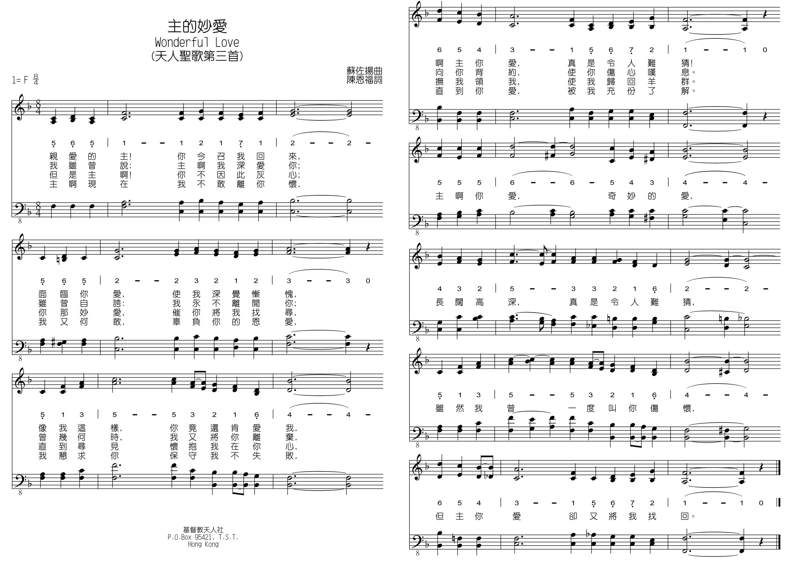

第二代以色列人可能曾聽見他們的長輩在探視 …
|
|
|
|
324 The Mountain Shall Depart |
“324p 大山可以挪開 THE MOUNTAINS SHALL DEPART. |
|
https://www.zanmeishige.com/tab/25692.html?songbook=1&index=324

|
|
|
|
|

大山可以挪開 https://www.youtube.com/watch?v=UWEh63cCLHs -
大山可以挪開 · 臺灣福音書房
https://youtu.be/wVQKbcIHTIM
1261
The Mountain Shall Depart 大山可以挪开
| Text: | 大山可以挪移 (The mountains shall depart) |
| Tune: | [The mountains shall depart] |
| Media: | Audio recording |
大山可以挪開 The Mountains Shall Depart
大山可以挪開，
小山可以遷移，
但主的慈愛永不離開你。
這首短歌是蘇佐揚牧師引用以賽亞書54:10的經文譜成的。
蘇佐揚牧師（John Su, 1916 - 2007）原藉廣東，出生在香港。
他十一歲開始學口琴，十二歲學彈風琴，兩年之內熟背二百多首聖詩曲譜後，開始學作曲，其後又學會了十餘種中西樂器。當年宋尚節，趙君影等名牧佈道會時，常請他司琴或領唱。他立志要將音樂的恩賜為主所用，除短歌外，尚作有天人聖詩二百二十首。
他用聖經經文譜寫了許多短歌，約有五百首，其中最著名的是「壓傷的蘆葦」（A Bruised
Reed），它使許多在痛苦試煉中的基督徒得安慰與鼓勵，其歌詞如下：
「壓傷的蘆葦，祂不折斷，（太12:20）
將殘的燈火，祂不吹滅；（賽42:3）
耶穌肯體恤，祂是恩主，（來4:15）
祂愛我到底，創始成終。（約13:1，來12:2）」
 (請點耳機收聽)
(請點耳機收聽)
蘇牧師於1937年畢業於山東華北神學院，自1937-1948年間在中國十九省奔馳為主作工，經歷許多困難，但從不灰心。
1948年終返香港，先後在香港、澳門兩地牧會、教學四年。
1953年春，他辭去了受薪的職務，開始過信心的生活，準備去海外為主作工，當時他親友都為他擔心「一家七口何以養生」？ 神賜給他兩句話：【紅海面前自有路，約但河邊不需橋】，神的話永遠有效。
1953-1961年間，他足跡遍日本、菲律賓、新幾內亞、澳州、星馬、泰國、越南、印尼等地。 1962-1976年間，他在歐美四十六個國家及地區向華人佈道。
他有語言天份，能用英文、國語、廣東話，閩南語、潮州話、客語及滬語講道。此外他也懂十多種歐亞語言。 他的座右銘是「祇對主忠心，不問人褒貶」。
在蘇牧師所作的兩百多首詩歌中，「主啊我深愛你」，「仰望救主」「主啊我心愛你」，「主愛改變我」等都是大家愛唱的詩歌。
仰望救主
Looking to Jesus
世上沒有一處是安居之所，都是叫人懼怕灰心難過，
世上沒有一處是安居之所，只有仰望救主耶穌度過。
世上沒有一處是安居之所，四面黑暗無人肯來幫助，
世上沒有一處是安居之所，苦海風波使人心靈痛苦。
世上沒有一處是安居之所，世界引誘使人心靈冷落，
世上沒有一處是安居之所，魔鬼掌權使人犯罪作惡。
世上沒有一處是安居之所，我的家鄉是在天父那�堙A
世上沒有一處是安居之所，只有仰望救主忍耐到底。
（副歌）
仰望救主，祂必施恩時常看顧，
請問世上那有一處是安居之所？
只有仰望耶穌渡過。
(請點耳機收聽)
蘇牧師雖已於2007年安息主懷，但他所創設的「基督教環球佈道會」仍不間斷的繼續為主發光，為主所用。其網址為 http://www.weml.org.hk/。
中英文聖詩集參考
英文歌名 The
Mountains Shall Depart
天人聖歌 39
教會聖詩 324
校園詩歌I 164
英文歌名 Looking
to Jesus
天人聖歌 7
天人樂歌 大山可以挪開 蘇佐揚
大山可以挪開，小山可以遷移，但主的慈愛永不離開你。
以賽亞書第五十四章10節
1935年，我在山東華北神學院第二年，來自浙江省的同學陳恩福兄，有一天給我看他所作的一首聖歌歌詞“主啊我深愛你”。我為這首聖歌譜好樂曲之後，抄一份四部合唱的琴譜給教音樂系的華以頓教授看，教授很奇怪我會作曲，他把那首聖歌彈了兩次，向我說：“你會作曲嗎”？我說：“學學而已。”他馬上把“主啊我深愛你”編入神學院合唱的詩歌內。於是，同學們都會唱，也都知道蘇佐揚會作曲。
後來有一天，陳無窮學兄拿一張小小的紙張來對我說：“這是前年宋尚節博士在福建佈道時，所送給我的一張經節。”（宋博士每次佈道時最後的一天均送給每個聽眾一個經節，但無經文）陳學兄所得的經節是以賽亞書五十四章10節，他問我能否為它作一首短歌。我對他說：“作聖歌比較容易，因為歌詞是整齊的，但聖經經文有長有短，作曲比較困難，不過我可以試試看。”數天之後，我作好了這一首短歌，陳同學很高興有這一首短歌，於是在神學院內不時唱着，同學們都問他唱甚麼歌，他說唱蘇佐揚同學所作的聖經短歌。以後大家都學唱，不少同學也把宋博士送給他們的經節拿來給我，請我作曲。
天人短歌第一首“大山可以挪開”問世了，後來這首歌跟着我在世界各地佈道，成了天人招牌歌，許多人會唱，也有許多人喜歡唱。在印尼佈道時，這首天人短歌竟有東西版本，是由兩個弟兄作不同的譯文。到南非佈道時，因為是講粵語傳譯為英語的，所以開始用英語來唱；最後在埃及佈道時，則譯為亞拉伯文，是從右到左而寫的，琴譜也是由右至左畫過去的。
香港的黃錫木博士曾來訪問我，他是專門研究經外作品的，我問他會否唱天人短歌第一首“大山可以挪開”？他說：“如果不會唱這一首，就不是中國基督徒了”，多謝他的高度評價。
我的一個神學生在1979年大陸開放以後，便回到福州探親。當他第一次參加當地教會的主日聚會，不料所唱的第一首歌，就是“大山可以挪開”，那日牧師並以此短歌為講壇，說世事改變但主愛不變。這個同學聽到這首天人短歌，竟然感動到流淚，心�婸﹛G“我老師的短歌竟然到了福州。”（但我未到過福州）真感謝主。
大山可以挪開，小山可以遷移，但主的慈愛永不離開你。
大山可以挪開，小山可以遷移，但主的慈愛永不離開你。
大山可以挪開 The Mountains Shall Depart
| 天人頌聲 | 歌譜 |
|
|
|
|
詩歌收錄於天人聖歌250首 |
|
天人樂歌 主的妙愛 蘇佐揚
抗戰時期，我一直在國內傳道，直到西北的蘭州，任職西北基督教聯會總幹事，要在甘肅，寧夏，青海一百零五個城鎮中巡視及講道。有時我要乘坐長途汽車，有些汽車是沒有上蓋的，風吹，雨打，日晒，雨淋亦一應俱全。有時要騎毛驢，由早上六時騎到晚上六時才能抵達一處黃土高原，有時也要騎腳踏車，記得有一次騎了三十英里還未抵達目的地；上山時要背着腳踏車，下山時，要用腳踏住前輪飛行而下，驚險萬分；有時也要坐牛車，“今天不到，明天一定到”。當時是1945年，不久抗戰勝利，人人思歸，但我要工作最少兩年才能南返。上述種種交通方式，我不是忍受，而是享受，覺得自己還可應付。
抗戰勝利不久，我收到一封由杭州寄來的信，原來是華北神學院的學兄陳恩福牧師，亦即天人聖歌第2首“主啊我深愛你”作詞的人，在信中另有一首簡譜的新歌，亦即後來定名為“主的妙愛”那一首，他來信如此說：
佐揚兄，欣悉你在中國大後方作，西北基督教聯會總幹事，可喜可賀，但是自從日軍侵華後，杭州的人都四處奔逃，我和許多信主的人都逃到一個小山上，在那�塈琤u有機會教小學，並無機會為主工作。這數年來，心中都十分不安，現在抗戰勝利了，我決心下山回到工場�堨h，繼續傳道。這首新作便是我的心聲，請你細閱，如有可能，請在你的天人報上為我發表，希望將來會有許多人受感動。
我細心閱他寄來這首新歌，歌有四節，我第一次閱讀時，好像看見四幅不同的圖畫。我再讀一次時，又像捲入四幕白話劇一樣，心�堿え健P動。
親愛的主！你今召我回來，面臨你愛，使我深覺慚愧，
像我這樣，你竟還肯愛我，啊主你愛，真是令人難猜！
我雖曾說：主啊我深愛你；雖曾自誇；我永不離開你；
曾幾何時，我又將你離棄，向你背約，使你傷心嘆息。
但是主啊！你不因此灰心；你那妙愛，催你將我找尋，
直到尋見懷抱我在你心，撫我領我，使我歸回羊群。
主啊現在我不敢離你懷，我又何敢，辜負你的恩愛，
我懇求你保守我不失敗，直到你愛，被我充份了解。
（副歌）
主啊你愛，奇妙的愛，長闊高深，真是令人難猜，
雖然我曾一度叫你傷懷，但主你愛卻又將我找回。
當時天人報在蘭州已出“西北版”，於是決定為這首新歌加上和聲，定名為“主的妙愛”（詩篇第十七篇7節有“你奇妙的慈愛”一語），開始在中國各地流行，也寄一份給恩福兄看。
勝利後第二年，我一家五口蒙神帶領，先到上海工作，一年後乘火車返港，其中艱苦的經過，詳記在“蒙恩的腳蹤”下集430條至434條，你看了會心酸。後來安抵香港，從今以後不再走難，可以安心事主。
蒙主帶領，1953年開始憑信心在東南亞各地佈道，也不斷介紹這首“主的妙愛”，我在馬來西亞佈道時，曾獨唱此歌，看見台下坐在第一行的一位長老流眼淚。在香港有一次我彈着當時的一部風琴（用腳踏板的）獨唱此歌，有一位青年幫我忙的，也不斷流淚，相信他心�埵釣ヾC
有一年我在加拿大佈道，有一位青年領唱詩，當他領唱“主的妙愛”時，竟然改了副歌中的一個字，那就是“雖然我曾一度叫你傷懷”，他竟然改唱為“雖然我曾幾度叫你傷懷”。散會後我問他為甚麼一度改為幾度？他說：“是的，我真是幾度叫主傷懷，希望在這次培靈佈道會中，我會和作歌詞的人一樣，‘直到你愛，被我充份了解’”。
主的妙愛 Wonderful Love
| 天人頌聲 | 歌譜 |
|
[聽歌(普通話)] |
|
|
詩歌收錄於天人聖歌250首 |
|
“主的妙愛”共有四節；可以將它編為四幕短劇：
第一幕，主面露笑容坐在中間一張大桌邊旁，桌上有一本聖經和一個十字架座，有一位穿着得不甚光鮮的人站在主對面，獨唱第一節。
親愛的主，你今召我回來，面臨你愛，使我甚覺慚愧，
像我這樣，你竟還肯愛我，啊！主你愛，真是令人難猜。
幕後有唱詩班同唱副歌。
第二幕，主仍坐在中間，這位青年人打扮得很光鮮，抬頭向上唱第二節。
“我雖曾說，主啊我深愛你”（即天人聖歌第2首，主啊！我深愛你。當時在華北神學院為神學生，不知天高地厚，口中奢言主啊我深愛你，並不困難）。
後來這位青年頭向左望，繼續唱第二節第二行的歌詞。
曾幾何時，我又將你離棄，向你背約，使你傷心歎息。
他一邊唱，一邊走到台的左邊，站在幕邊，頭向下垂，同時坐在台中間的主不斷搖頭嘆息，此時幕後詩班唱天人聖歌第85首“我曾冷淡”第一節（不唱副歌）。
第三幕，主站起來，手拿牧杖，台右邊有一道圍欄，欄內有幾個小孩扮成小羊，這位青年仍然站在左邊的附近，向幕�堿搳A衣服穿得很隨便。這位牧人在台上四圍觀望尋找，幕後有詩班唱第三節。
後來這位牧人走到青年前面，低頭把一隻小羊抱在懷中（那小羊代表離開主的那位青年人），面露笑容，走到右邊幾隻小羊那�堙A輕輕地把那小羊放下。這時幕後詩班唱天人短歌第116首“迷路的羊”第一節。
第四幕，主仍坐在中間，這位青年人身穿整齊衣服，手持金邊聖經，很有禮貌慢慢從台左邊走過來，走到主面前唱第四節。
“主啊！現在我不敢離你懷，我又何敢，辜負你的恩愛”。唱完第一句後，在主前跪下，唱第四節第三句：“我懇求你，保守我不失敗，直到你愛，被我充份了解”。這時主用手撫摸他的頭，面露笑容，這青年人站立起唱這首詩的副歌：“主啊你愛，奇妙的愛，長闊高深，真是令人難猜，雖然我曾，一度叫你傷懷，但主你愛，卻又將我找回”。唱完後，幕後詩班唱天人短歌第15首“盡忠為主”第四節。
四顧迷羊，流離困苦，有誰同情有誰憐？
靈魂喪失日以萬計，神家荒涼到何年？
願主潔我煉我用我，餘下光陰勝於先，
盡心竭力討主喜悅，直到站在我主前。
唱到末後兩句時，這位青年站起來，面露笑容，由主挽着他的右手慢慢向前行。
－劇終．落幕－
1979年中國大門打開後，我試試看寫信到杭州去給陳恩福兄，告訴他我幾十年在海外佈道的工作，他收到信後十分開心。我在信�媢鴷L說了幾句話：
恩福兄，你一生忠心事主，當然很好，但你所作的這兩首天人聖歌，即第二首“主啊！我深愛你”及第三首“主的妙愛”，已經感動無數的基督徒，也有一位宣教師把這歌譯為英文，使唱英語的中外基督徒也可以唱。隨着香港的基督徒移民到加拿大，美國和澳洲，這首主的妙愛也到了“遙遠的那方”，使許多人蒙恩了。
（原載於天人之聲）
https://www.ebaomonthly.com/ebao/readebao.php?a=20051023

天人樂歌 主啊，我深愛你 蘇佐揚
一．主啊我深愛你，甚願我永屬你，願你居我靈�堙A永不分離。
二．在天我還有誰？在地亦無所愛，惟願掬我衷情，傾於主宰。
三．金銀雖有千萬，聲譽可遍麈寰，一旦若失了你，我心何安。
四．除你別無所求，惟你能解我憂，世人都難久靠，你愛無休。
副歌：主啊我深愛你，我是永遠屬你，因你已先愛我，為我捨己。
1934年春，山東滕縣華北神學院春季學期開始，學院舉行開學聯歡會，我和另外兩位香港青年同學要唱一首詩，於是我彈琴，三人一同唱一首當時在香港唯一的“福音聖詩”中的一首。學院的音樂教授華以德先生知我會彈琴，於是也分派我和其他幾位同學輪流在早禱，晚禱聚會中司琴。
1935年春，陳恩福同學知道我會作曲，於是把這一首詩的歌詞拿給我看，問我能否配曲。我把歌詞念了兩遍，覺得非常抒情，便答應為他作曲。一個禮拜之後，便把這首歌的曲譜寫好，給同學試唱，同時也抄了一份請華以德教授指教。他家�埵鹵�琴，當時我們作學生的只有風琴可以練習，華教授在鋼琴上彈了幾次後，問我說：“你會作曲嗎”？我回答說：“學學而已，不能登大雅之堂”。他馬上對我說：“你以後練琴，不必再彈風琴，我安排你在我家�媦u鋼琴罷”！我聽他這樣說，真是受寵若驚。不久他把這一首我們的處女作天人聖歌請同學抄寫用石印印妥，編入神學院唱詩班的詩歌中，同學可以學唱。
主啊我深愛你 Wonderful Love
| 天人頌聲 | 歌譜 |
|
詩歌收錄於天人聖歌250首 |
|
不久，我把這一首歌另作一次，作成“變奏曲”（天人聖歌120首）。變奏曲即同一首詩歌有幾個不同的唱法。作好了也抄一份給華教授，他在鋼琴上彈了一次，也和我一同研究變奏的和聲句子，同時又吩咐同學用石印印了幾十份，編入唱詩班本中。
可是不久在山東青島有一位長老王宣忱長老也收到這一首變奏曲，他竟然與我通信，說要把這一首變奏曲“主啊我深愛你”刊在他所編印的聖歌詩本中。我當然喜出望外，這位長老也曾一人重譯新約聖經出版，也贈送給我一冊，可惜在抗戰時遺失。他也告訴我，他從前是翻譯和合本聖經委員的書記之一，他把不少關於該會各翻譯員的有趣故事告訴我。
華以德教授起初也教我彈鋼琴，後來知道我連變奏曲都會作，便對我說：我以後不再教你彈鋼琴了，你自己練習罷。於是他把當時我尚不認識的許多名鋼琴家的琴譜搬出來，約有十多種，要我自己學彈，包拮蕭邦，舒伯特，舒曼，柴可夫斯基及李斯特等作品。我稍為翻閱一下，使我咋舌不已。我自問怎能彈這些艱深的名作家鋼琴譜。後來華教授把好幾本“和聲與作曲”的英文書給我看，當時我雖然不能完全看懂那些書的英文，但我看得懂有關和聲的種種舉例，使我眼界大開，也覺得自己不過是作曲的幼稚園學生。在三年內，我拚命的學彈，也喜歡彈上述那些名家作品，才知“和聲與作曲學”實在太艱深，太複雜，自己只好忍耐研究，作為將來作曲的參考。
七十年後的今日，我沒有對這首天人聖歌處女作有太多修改，讓它保存我19歲時作曲時的靈感，不料這首天人聖歌竟不脛而走，國內及海外各處教會的基督徒都喜愛它，也受它的感動。
與作詞的陳恩福牧師一別數十年，我曾寫信告訴他說：
你的兩首大作，即主啊我深愛你和主的妙愛（天人聖歌第三首），已流傳全世界，你一生事主工作雖然多，但這兩首聖歌的貢獻實在非常驚人，我在全球各地佈道時，都聽見信徒們唱這兩首作品。你在世上留下的兩首詩歌，幫助了千萬人，你應該大大向主感恩了。
每次重聽這首“主啊我深愛你”之時，好像走進時光隧道，回到19歲的時候，也回憶山東滕縣華北神學院與陳恩福學兄時常交談的快樂，一同唱“主啊我深愛你”。
https://www.ebaomonthly.com/ebao/readebao.php?a=20051121
苏佐扬牧师
苏佐扬牧师（John
Su）1916年生于香港的九龙，原藉广东。他十一岁开始学口琴，十二岁学弹风琴，两年之内熟背二百多首圣诗曲谱后，14岁开学作曲。其后又学会了十余种中西乐器。当年宋尚节、赵君影等名牧布道会时，常请他司琴或领唱。16岁，他在宋尚节博士初来香港布道时，决志献身。18岁进入山东华北神学院念神学。
苏牧师于1937年毕业于山东华北神学院，毕业后，日本战事开始，自1937-1948年间在中国十九省奔驰为主作工，经历许多困难，但从不灰心。先在中国各省自由传道，卅岁在甘肃被按立为牧师，1948年终返香港，先后在香港、澳门两地牧会、教学四年。
1953年春，他辞去了受薪的职务，开始过信心的生活，准备去海外为主作工，当时他亲友都为他担心“一家七口何以养生”？神赐给他两句话：“红海面前自有路，约但河边不需桥”，神的话永远有效。自1953-1961年间，他足迹遍日本、菲律宾、新几内亚、澳州、星马、泰国、越南、印尼等地。1962-1976年间，他在欧美四十六国家及地区向华人布道。他有语言天份，能用英文、国语、广东话，闽南语、潮州话、客语及沪语讲道。此外他也懂十多种欧亚语言。他的座右铭是“祇对主忠心，不问人褒贬”。
苏牧师凭信心于1942年创办《天人之声季刊》及1963年开办“天人神学院”（现只办海外函授科）。至今他已出版了卅多种书籍，他用圣经经文谱写了许多短歌，约有五百首，他立志要将音乐的恩赐为主所用，除短歌外，尚作有天人圣诗二百二十首。
蘇佐揚牧師
蘇佐揚牧師1916年出生於香港，是第三代基督徒，自小在教會中成長。自十四歲開始作曲⋯⋯
https://www.vinemedia.org/category/praise/john-su/